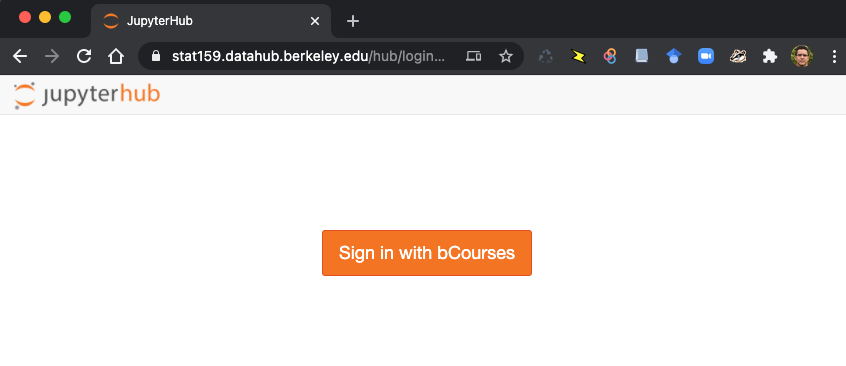
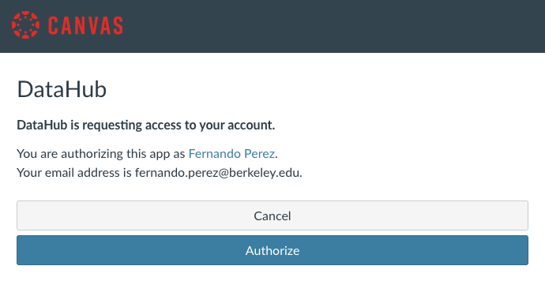
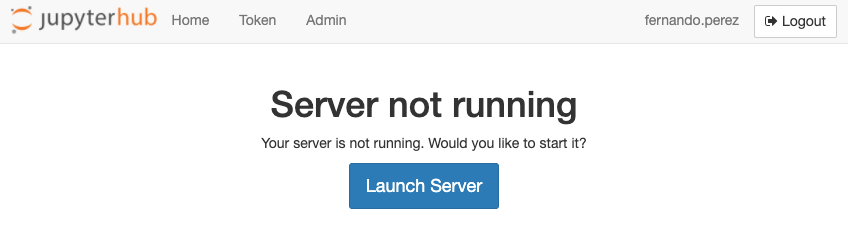
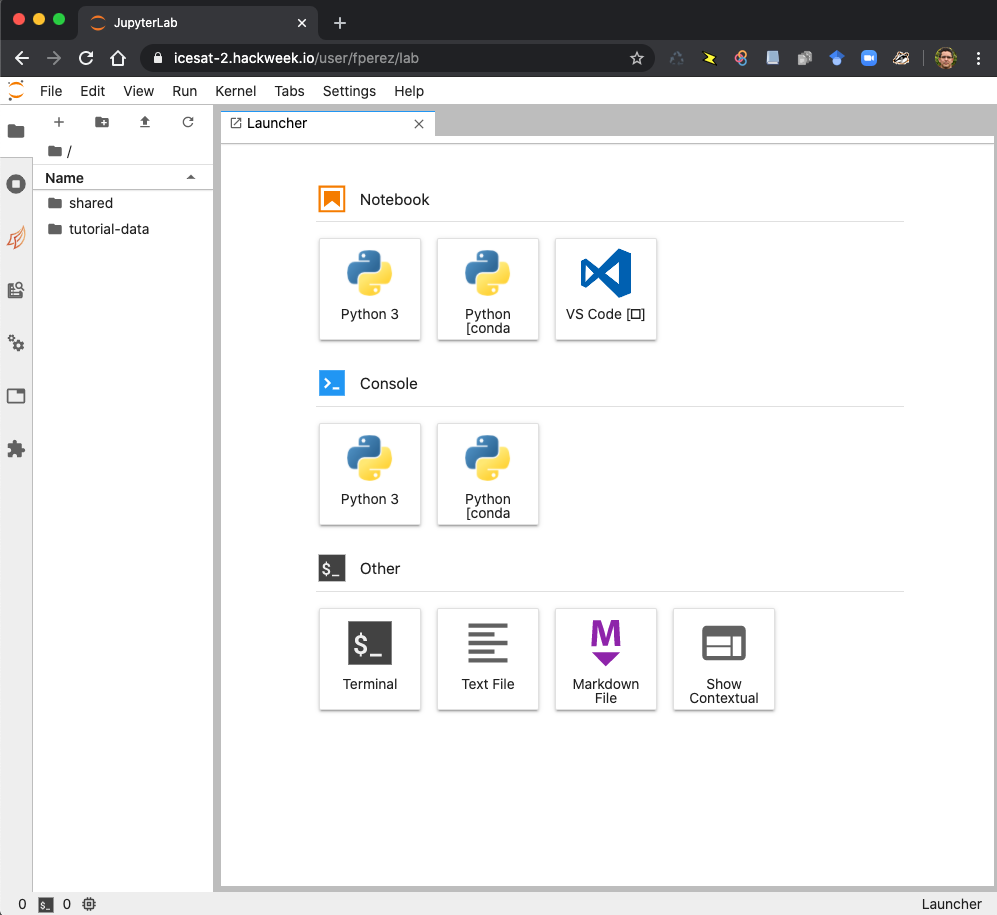
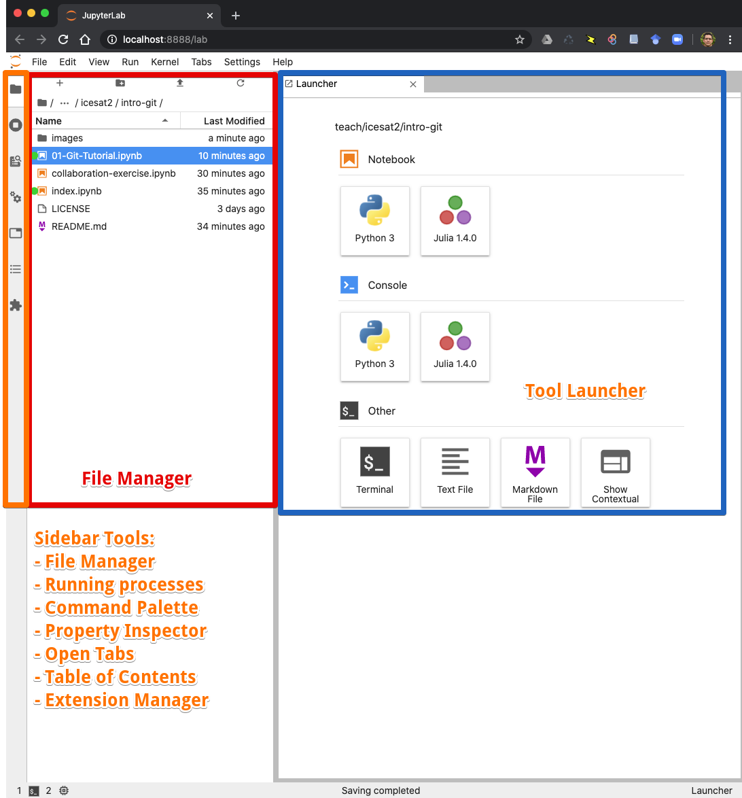
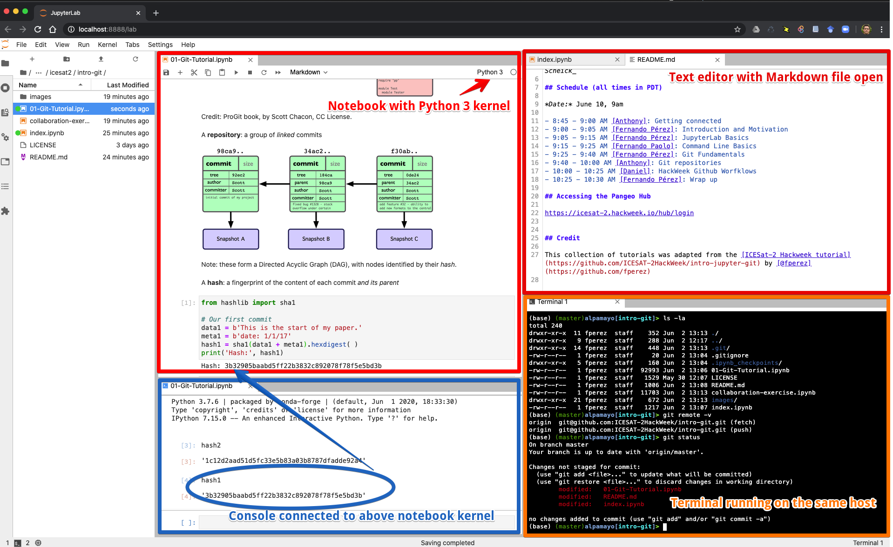
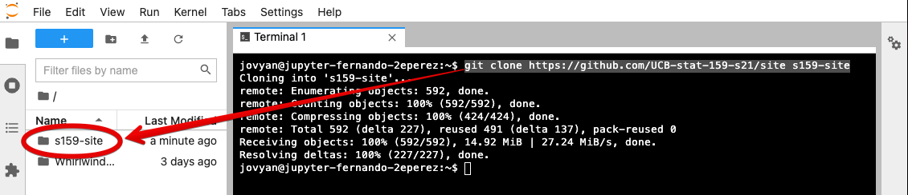

Jupyter - Interactive Computing and Data Science
Contents
Jupyter - Interactive Computing and Data Science¶
In this short section, we’ll provide a brief overview of the tools we’ll be using from Project Jupyter. We will present this live on the tutorial from a more interactive slide deck, but these notes may be useful as a reading reference.
In brief, Jupyter provides a variety of tools to help you explore your data and computational worfklows interactively, that is in a context where you use a programming language (Python in our case) to execute (typically small amounts of) code and immediately view the results, informing your next steps where new code is executed. This process, inherently iterative and exploratory, is a natural fit for scientific research and commonly available in many environments like Matlab, IDL, Mathematica and more.
Jupyter brings a set of open standards and tools to this space: it supports over 100 programming languages, provides interfaces that let you use this workflow similarly on your laptop or on a remote system (like the cloud or a supercomputer), and has a rich ecosystem of related and supporting tools.
Later we’ll dive deeper into the Jupyter tools, for now we’re going to quickly cover enough of our two key ones to make sure you find your bearings in this tutorial, which focuses on Git and GitHub.
JupyterHub¶
While you can install the Jupyter tools to run on your laptop, we will instead run them on a cloud computing environment that offers scalable computational resources as well as close proximity to the data we want to use. Instead of all of you having to download lots of data each, we can spin up virtual computers in the cloud pre-configured with all the same tools and packages you’d need locally, in close proximity (in a network sense) to the data.
JupyterHub is the tool in Jupyter that helps us do this: it is a multi-user server that lets us easily host Jupyter and other interactive data science tools (such as R Studio) under one “web roof”.
When you go to our DataHub at https://stat159.datahub.berkeley.edu, you should see this:
{kind=link}
after logging in with your bCourses/CalNet credentials, you will need to authorize the app to connect to Canvas:
{kind=link}
You can then click on the launch button to start your server:
{kind=link}
which, after a progress bar, should produce something like this:
{kind=link}
Pause: anyone with login issues?¶
Jupyter Lab Basics¶
JupyterLab is a locally- or cloud-based environment for interactive computing, that lets you create Jupyter Notebooks but has many more tools and capabilities. We will dive into more detail in our next tutorial, but for now let’s see a brief rundown of its structure so you can get oriented.
This is what JupyterLab looks like upon startup:
{kind=link}
And this is JupyterLab with a number of tools open:
{kind=link}
Now, we will grab our tutorial materials! They are located in this GitHub repository.
First, open a terminal in JupyterLab, and in that terminal type:
git clone https://github.com/UCB-stat-159-s21/site s159-site
You should see something like the following, with the new folder containing the tutorial appearing a few seconds later in the left sidebar:
{kind=link}